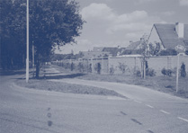

Waarom welstandszorg?
|  |
Sommigen zullen aanvoeren dat die dingen de levendigheid van de omgeving
vergroten en wijzen dan naar de 'vrolijke' wanorde bij onze zuiderburen.
Het is echter zeer de vraag of dat enthousiasme zou blijven wanneer die
toestanden hun dagelijkse leefomgeving zouden treffen. Van oudsher hebben
mensen hun omgeving overzichtelijk gemaakt, verzorgd en verfraaid. Daardoor
wordt en blijft die omgeving bewoonbaar. Een omgeving die hieraan niet
voldoet maakt onzeker en wekt vaak agressie en onlustgevoelens op (denk
bijvoorbeeld aan graffiti).
In Nederland leven we op elkaars lip. Met als gevolg dat als iemand hier wat bouwt anderen daar bijna altijd de invloed van ondervinden, zowel in positieve als in negatieve zin. We bouwen dus nooit alleen voor onszelf. Of het nu om een woning of om een landbouwschuur gaat, een fabrieksgebouw of een dakkapel, er is altijd een omgeving aanwezig waarin zo'n bouwwerk moet passen. En er zijn altijd anderen die van die omgeving gebruik moeten maken omdat ze er wonen, werken of hun vrije tijd besteden. Bovendien bouw je niet alleen voor nu: een gebouw staat vaak meer dan vijftig jaar en neemt al die tijd een stuk van de schaarse ruimte in beslag.
Gebouwen maken die passen in de omgeving is niet altijd even eenvoudig. Je moet niet alleen een buitenkant, maar ook een binnenkant maken, en de eisen die aan de binnenkant van een gebouw worden gesteld zorgen nog niet automatisch voor een goede buitenkant. Ook kan het voorkomen, dat de opdrachtgever of ontwerper eisen aan het gebouw stelt die verhinderen dat het gebouw zich in de omgeving kan voegen. Dan moeten er belangen worden afgewogen.
Als een gebouw er goed uitziet en in zijn omgeving past, zeggen we dat
het wel-staat. Omdat bouwen de omgeving beïnvloedt en dus de gemeenschap,
is deze welstandszorg, een overheidstaak. De overheid kan en mag dit niet
aan het particuliere initiatief overlaten. Zij moet belangen afwegen en
een beslissing nemen. Maar wat zijn de juiste argumenten om zo'n beslissing
te nemen? Hoe sluit je partijdigheid of willekeur uit? Het zal duidelijk
zijn dat hiervoor een onafhankelijk en deskundig adviesorgaan noodzakelijk
is. Dat is de welstandscommissie. De welstandscommissie adviseert het
College van Burgemeester en Wethouders bij bouwvergunningaanvragen. Zij
moet dit doen op basis van redelijke eisen van welstand, zoals dat in
de Woningwet is omschreven. Dat houdt in, dat de zwaarte van de eisen
die je aan het uiterlijk van een bouwwerk stelt moet samenhangen met de
invloed die dat bouwwerk op de omgeving zal hebben. Hoe groter die invloed,
hoe zwaarder de eisen. Zo zijn de voorwaarden die aan een voorgevel gesteld
worden over het algemeen hoger dan die aan de achtergevel. Ook kan het
zijn dat in een kwetsbare historische omgeving een bepaald ontwerp niet
voldoet aan redelijke eisen van welstand, terwijl hetzelfde plan in een
neutralere omgeving zonder meer zou worden goedgekeurd.